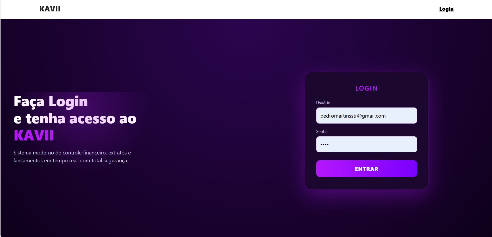
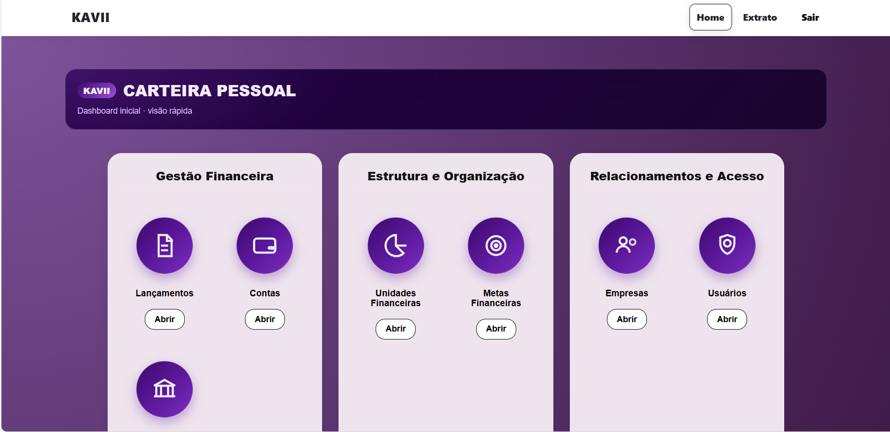
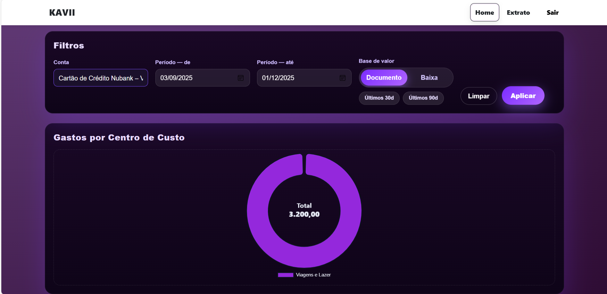

Projeto Full-Stack
KAVII Sistema Financeiro
Sistema moderno de gestão financeira pessoal, focado em controle, organização e visualização clara de dados financeiros em tempo real.
Sobre o projeto
O KAVII é uma plataforma de gestão financeira pessoal desenvolvida para centralizar, organizar e analisar informações financeiras de forma segura, intuitiva e eficiente.
O sistema adota boas práticas de desenvolvimento e arquitetura, contando com validações robustas, controle de acesso por permissões e mecanismos de integridade de dados, garantindo confiabilidade, escalabilidade e proteção contra operações indevidas ao longo do ciclo de uso da aplicação.
Funcionalidades principais
- ✔ Gestão de lançamentos (receitas e despesas)
- ✔ Controle de múltiplas contas financeiras
- ✔ Metas financeiras com acompanhamento
- ✔ Organização por unidades financeiras
- ✔ Gestão de empresas e usuários
- ✔ Dashboard com filtros e gráficos interativos
Tecnologias utilizadas
Telas do sistema

Tela de Login
Autenticação segura com e-mail e senha, utilizando JWT.

Dashboard
Visão geral do sistema com acesso rápido às principais áreas.

Extrato e Filtros
Extratos detalhados com filtros por conta, período e gráficos.